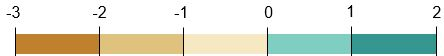

Human Rights & Labor Statuses
Study Area: SunPower Corp Manufacturing Locations
These maps explore various conditions of the countries in which SunPower owns and operates their manufacturing plants.
Human Rights
fill in
Human Rights Violations
fill in
Economic Freedom
fill in
Wage per Hour
fill in
Ratio of Female to Male Labor
fill in
Data was adapted from Our World in Data - Human Rights. CSV data was downloaded and adapted to fit the criteria of this project.